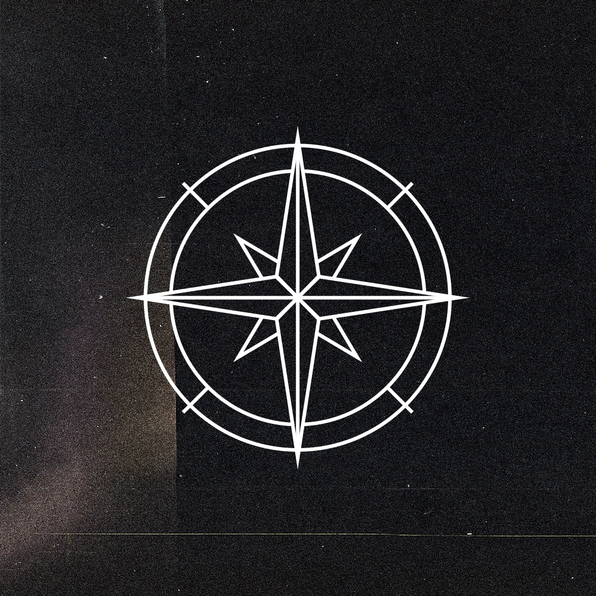
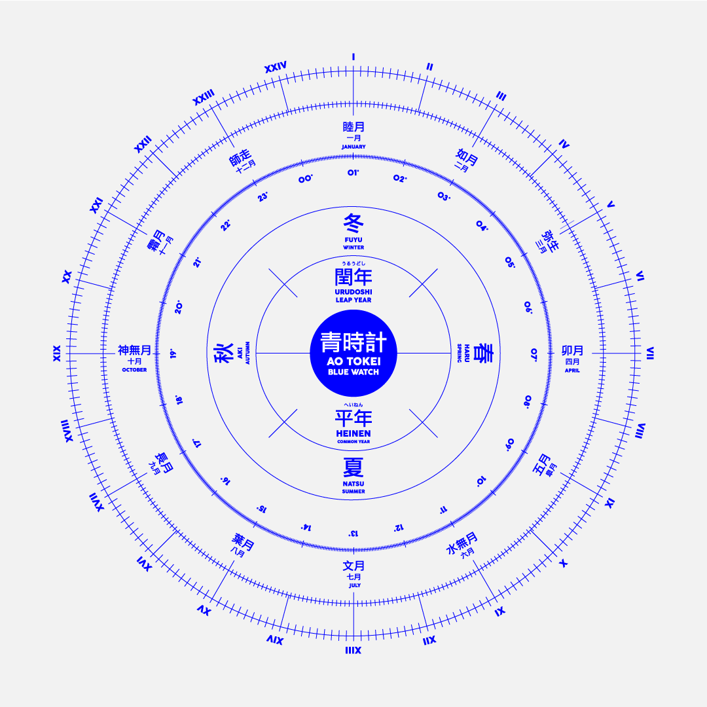
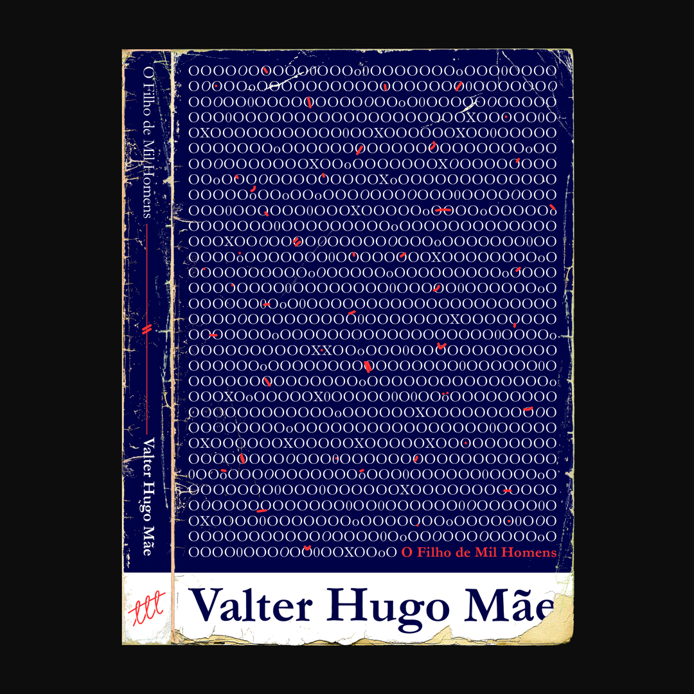
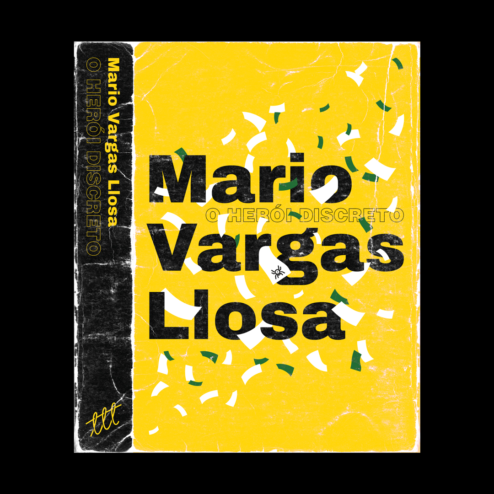
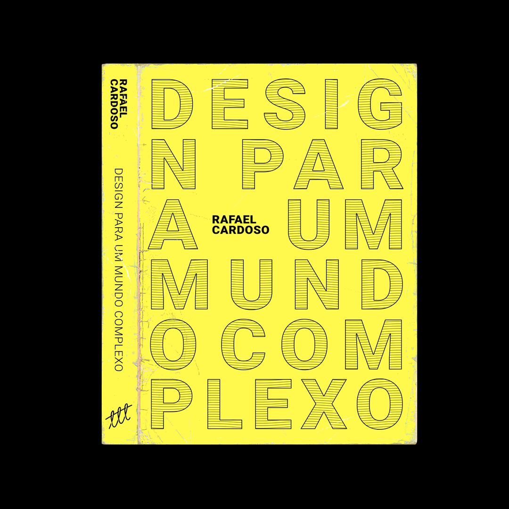
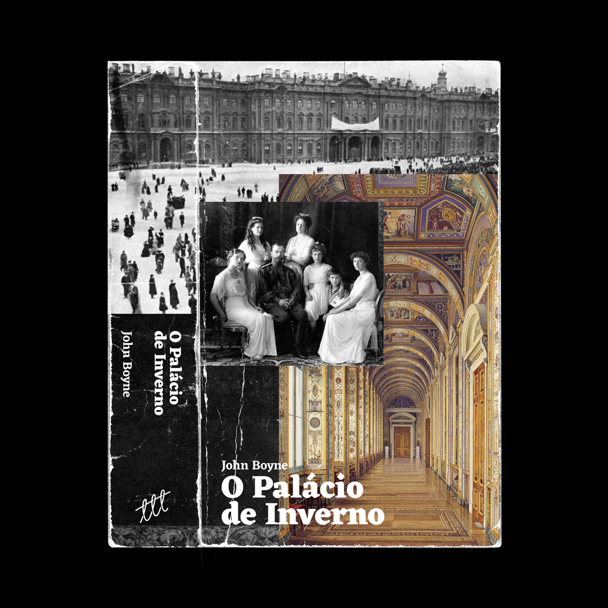

Ya Mu
About me


What about the images in the circle?
⭢ Quick Answer
All the images you see inside the circle are standalone experimental designs made by myself. These works range from fictional brands, book covers, experimental typography, animations and other other kinds of designs. They can all be found on my instagram account @yagomurakami.


But what about the books?
⭢ Quick Answer
The book cover project started in 2019 with the intent to make me read more and to exercise the application of concept through design. The idea is to redesign the book cover and spine only after reading the entire book. This gave me the liberty to choose what part of the story to focus and work on.



